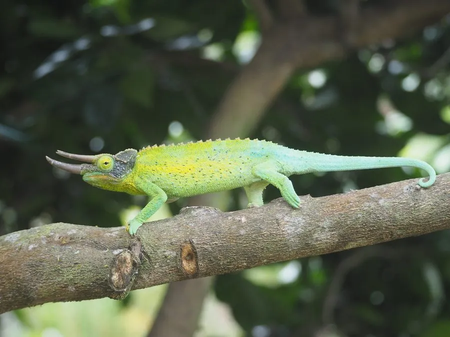

爬行动物 · 动物界
杰克逊变色龙 Trioceros jacksonii

东非山地的小型变色龙，雄性头部长有三只角，卵胎生直接产下幼蜥，被引入夏威夷后成为入侵物种。
- 分类
- 门脊索动物门纲爬行纲目有鳞目科变色龙科属三角变色龙属
- 栖息环境
- 东非山地森林、湿润灌丛与树冠层
- 地理分布
- 肯尼亚、坦桑尼亚；被引入美国夏威夷等地
- 保护级别
- IUCN 无危（LC）；CITES 附录 II；非中国原产
物种志
杰克逊变色龙体长 20–30 厘米，雄性大于雌性，最显著的特征是雄性的头部长有三只角：吻部两只、眼后一只，形似三角龙，“三角变色龙”之名由此而来；雌性通常只有很小的角或没有角。体色以鲜绿、黄绿为主，雄性的角呈黄褐色，身体两侧常带黄色条纹。
它原产于肯尼亚和坦桑尼亚的山地森林，栖息于湿润的灌丛和树冠层，白天活动，捕食昆虫，靠弹舌捕猎。与多数变色龙不同，它是卵胎生，雌蜥妊娠约 5–6 个月后直接产下 10–30 只幼蜥。它因外形奇特被大量捕捉作为宠物，并被引入美国夏威夷等地形成入侵种群；目前野外种群尚较稳定，被列为无危物种，国际贸易受国际公约监管。
形态与习性
- 食性昆虫，如蟋蟀、蝇类和蛾类
- 体长20–30 cm，雄性较大
- 寿命约 5–8 年
- 繁殖卵胎生，妊娠 5–6 个月，每胎 10–30 只
- 活动节律昼行性，树栖
趣味知识
- 雄性杰克逊变色龙头上有三只角，看起来像一只小三角龙。
- 它是卵胎生变色龙，雌蜥直接产下活的幼蜥。
- 杰克逊变色龙被引入夏威夷后建立了野外种群，成为当地的入侵物种。